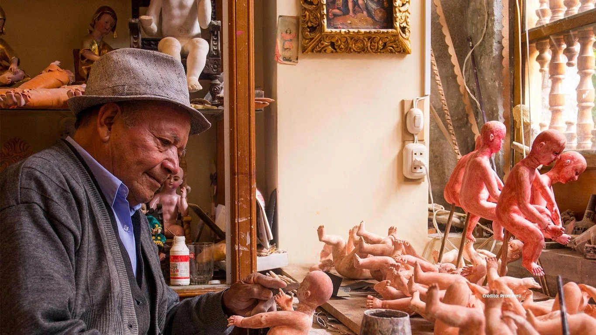

Primero, entender qué te mueve
No necesitas llegar con una lista de lugares. Nos cuentas con quién viajas, cuánto tiempo tienes y qué te gustaría sentir. Te mostramos posibilidades para que descubras también lo que aún no sabías pedir.
EXPERIENCIAS A TU MEDIDA
Tu viaje empieza con una conversación. Nosotros ponemos el conocimiento del destino, la coordinación y el cuidado para convertir tus ideas en experiencias.
Diseñemos mi viaje por WhatsApp
No necesitas llegar con una lista de lugares. Nos cuentas con quién viajas, cuánto tiempo tienes y qué te gustaría sentir. Te mostramos posibilidades para que descubras también lo que aún no sabías pedir.
Historia, sabores, mar, montaña y selva tienen tiempos distintos. Elegimos las combinaciones con una mirada real de los traslados, las reservas y el ritmo de cada persona.
Coordinamos tu recepción y traslados, y mantenemos un contacto cercano por WhatsApp. Queremos que puedas concentrarte en vivir lo que diseñamos contigo, con apoyo cuando necesites ajustar algo.
Sí. La propuesta se diseña contigo según tus días, intereses y preferencias. Las actividades y reservas se acuerdan antes de viajar.
Escríbenos por WhatsApp con tu idea y fechas aproximadas. No necesitas saber qué visitas pedir: te ayudamos a descubrir opciones.
Coordinamos tu recepción en el aeropuerto, traslados privados y un contacto por WhatsApp durante el viaje. El detalle se define en tu propuesta.